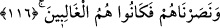
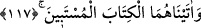
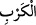
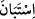
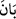
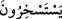
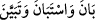
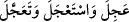

115. Onları ve kavimlerini o büyük sıkıntıdan kurtardık.
“Onları ve kavimlerini” İsrailoğullarını “o büyük sıkıntıdan” Firavun ve kavmi
Kıptîlerin işkencesinden “kurtardık.”
“ kelimesinin mânâsı bu surede 76. âyette geçmişti. Burada elde edilen sonuç
yalnız felaket ve musibetten kurtarmak olup bu da galibiyet ve üstünlüğü
gerektirmeyince Allah Teâlâ’nın bu kavlini şu âyet-i kerime izlemiştir:
116. Kendilerine yardım ettik de galip gelen onlar oldu.
“Kendilerine” yani Mûsâ, Hârûn ve kavimlerine “yardım ettik de” bu sebeple onlar,
Firavun ve kavminin zulüm ve işkencesi altında esir olup ezildikten sonra düşmanlarına
karşı en üst düzeyde “galip gelen” yalnız “onlar oldu.”
Bu kavl-i ilâhide kalb Mûsâ’sının ve sır Hârûn’unun dünya denizinde ve onun şehvet
suyunda boğulmaktan kurtulduğuna bu sıfatlarla beraber kalb ve sırrın nefis firavununa
ve onun sıfatına karşı kendilerine yardım edildiğine işaret edilmektedir. Öyleyse velâyet
ve dostluk belirtileri ortaya çıkıncaya kadar mücahitler, belalara sabretsinler; zira
gecenin sonu gündüz; son bahar ve kışın sonu ise ilk bahar ve yazla birlikte çiçeklerin
ve nurların ortaya çıkma mevsimidir. Hâfız der ki:
Bülbüller kıştan ne çok cefalar çektiler
İlkbahar yine geri gelecek ümidi ile
117. Her ikisine de apaçık anlaşılan bir kitabı (Tevrat’ı) verdik.
Zikredilen bu kurtarma ve yardımdan sonra “Her ikisine de apaçık anlaşılan” beyan,
izah ve ayrıntıda son derece beliğ olan “bir kitabı (Tevrat’ı) verdik.”
Zira Tevrat, din ve dünya maslahatlarında ihtiyaç duyulan bütün ilimlere şâmil bir
kitaptır. Allah Teâlâ şöyle buyuruyor: “Biz, içinde doğruya rehberlik ve nur olduğu
halde Tevrat’ı indirdik.” (el-Mâide 5/44). “ kelimesi “” kelimesinin mübalağa
sığasıdır. “Vuzuha kavuştu, açığa çıktı” demektir. Kitap, ahkâmı beyan etmede helali
haramdan ayırmada tam ve kâmil olduğu için beyan ve açıklama da zirvede ve üst
noktada kabul edilmiştir. Sanki kitap kendinden bu hükümleri beyan etmesini istiyor ve
buna kendi kendisini teşvik ediyor. Buradaki “”in yukarıda 14. âyetteki “
kelimesindeki “” gibi olduğu da söylenmiştir. Yani sırf mübalağa için getirilmiştir.
Zira “ kelimeleri birdir. Aynı “ fiilleri gibidir. Hepsi